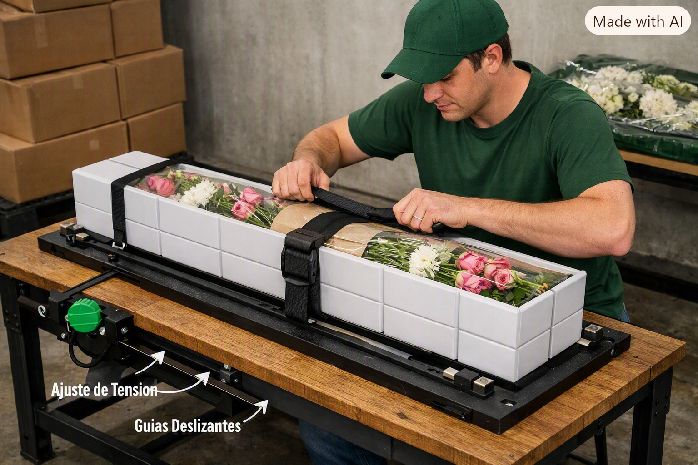

Coordinación ojo-mano
Ubicar tallos, envoltura, banda y etiqueta en el punto indicado.
Inicio
Las habilidades motoras y cognitivas que sostienen un empaque seguro, ordenado y consistente.
Ejecutar el ciclo completo: recibir, inspeccionar, organizar, proteger, empacar, cerrar, identificar y dejar el puesto listo.
Meta: calidad + seguridad + autonomíaUbicar tallos, envoltura, banda y etiqueta en el punto indicado.
Tomar y ajustar materiales pequeños sin maltratar la flor.
Realizar cortes, dobleces, amarres y cierres dentro de la tolerancia.
Seguir la receta, reconocer cambios y sostener la concentración.
Clasificar por referencia, tamaño, color, calidad y pedido.
Mantener el tiempo objetivo, el orden y una postura segura.
Aplicación específica
Aprobar después de tres ciclos consecutivos con calidad, precisión, tiempo, seguridad y autonomía.
Aplicación
Recursos del catálogo Causa & Efecto que aíslan los componentes de la destreza antes de llevarlos al puesto.
Destreza fina y movimiento de pinza para tomar etiquetas, bandas y separadores.
DiagnósticoCoordinación fina y ubicación de elementos en posiciones definidas.
DesarrolloRapidez y exactitud de ensamble manual para preparar cierres y componentes.
DiagnósticoMovimientos dirigidos, seguimiento de instrucciones y coordinación bimanual.
TransferenciaControl de muñeca y desplazamientos suaves para evitar roces y golpes.
DesarrolloAtención dividida, memoria de trabajo y respuesta ante cambios de orden.
DiagnósticoCreatividad
Una estación reutilizable que convierte el gesto de empacar en una práctica medible, ecológica y repetible.

Pupitre Flor-Flow · práctica de ajuste y cierre
Diseño del pupitre
El sistema reproduce el recorrido del zuncho y las decisiones de calidad de una operación real, con materiales que pueden abrirse y cerrarse en cada ronda.
Dinámica de uso
Reduce cartón y cintas desechables.
Permite practicar muchas veces.
Simula cajas y dificultades distintas.
Acerca la práctica al puesto real.
Complemento
Un espacio de reflexión, teoría y práctica para que la destreza se sostenga durante toda la jornada.
El dojo combina explicación corta, demostración, práctica, retroalimentación y transferencia. Cada estación deja una evidencia concreta de aprendizaje.
Reconocer defectos y criterios de aceptación.
Ejecutar el ciclo en el orden correcto.
Detectar, separar y registrar no conformes.
Cuidar postura, alcance, corte e higiene.
Equilibrar tiempo de ciclo y conformidad.
Escalar anomalías con datos oportunos.
Cierre de formación